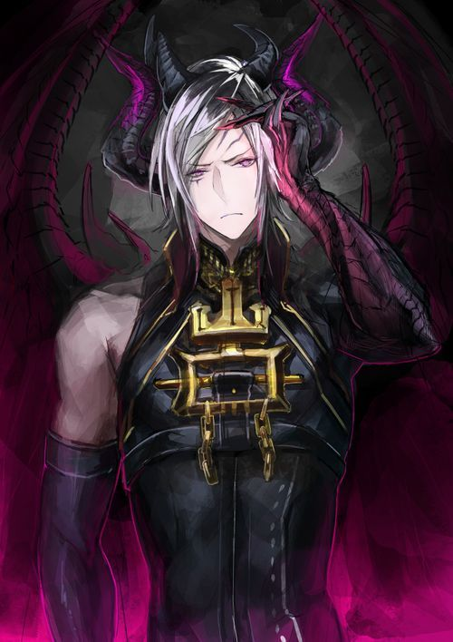

| Satan | Wrath/ Kemarahan | ||||
|  |
|
||||
|
Dia adalah perwujudan dari antagonisme yang berasal dari agama-agama Abrahamik. Dia memunculkan kemarahan yang akhirnya bersifat detruktif dan menimbulkan dosa. Contoh dari akibat dari dosa ini adalah membunuh (bisa juga membunuh orang lain buat pemujaan). Namun yang paling berat dari dosa ini adalah bunuh diri. | ||||